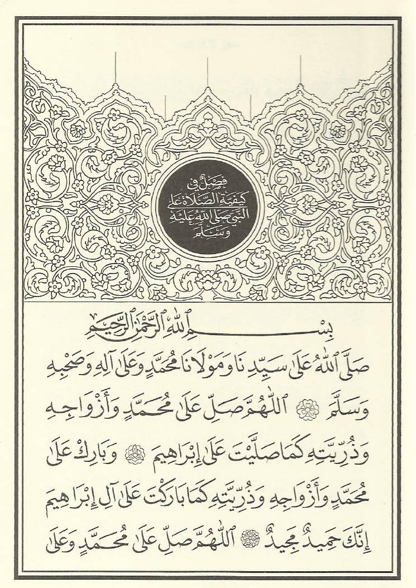
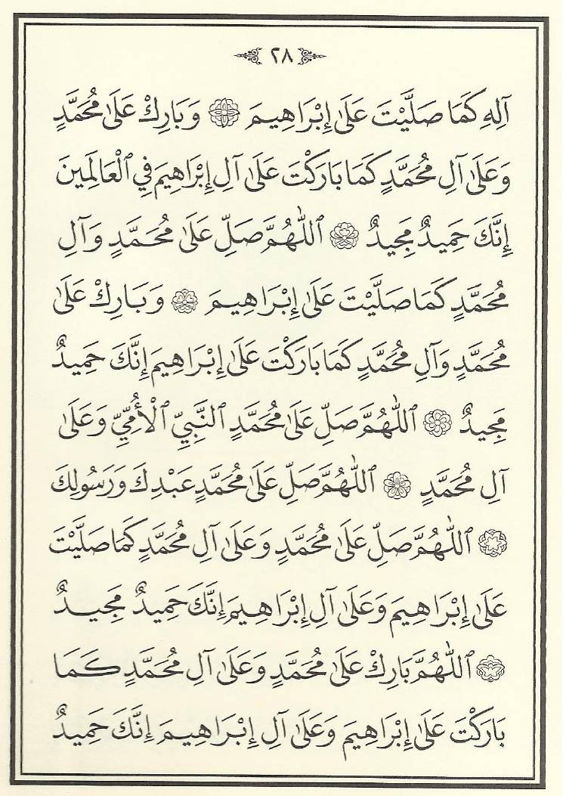
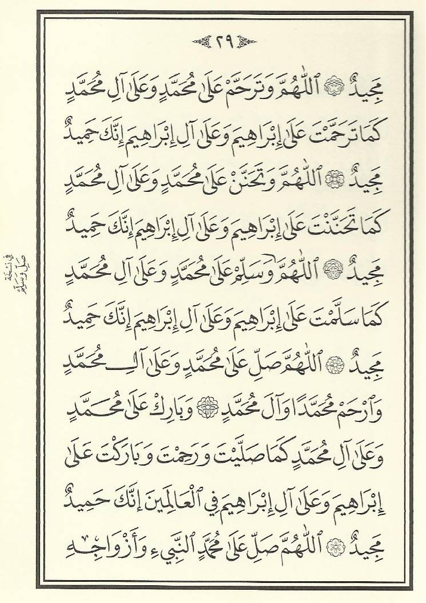
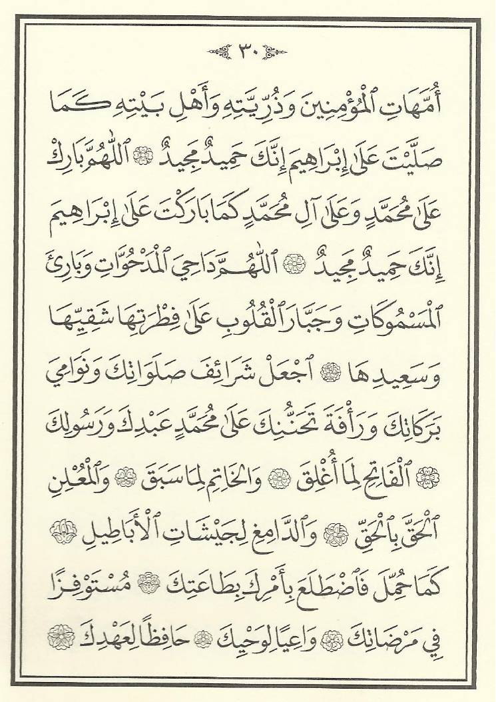
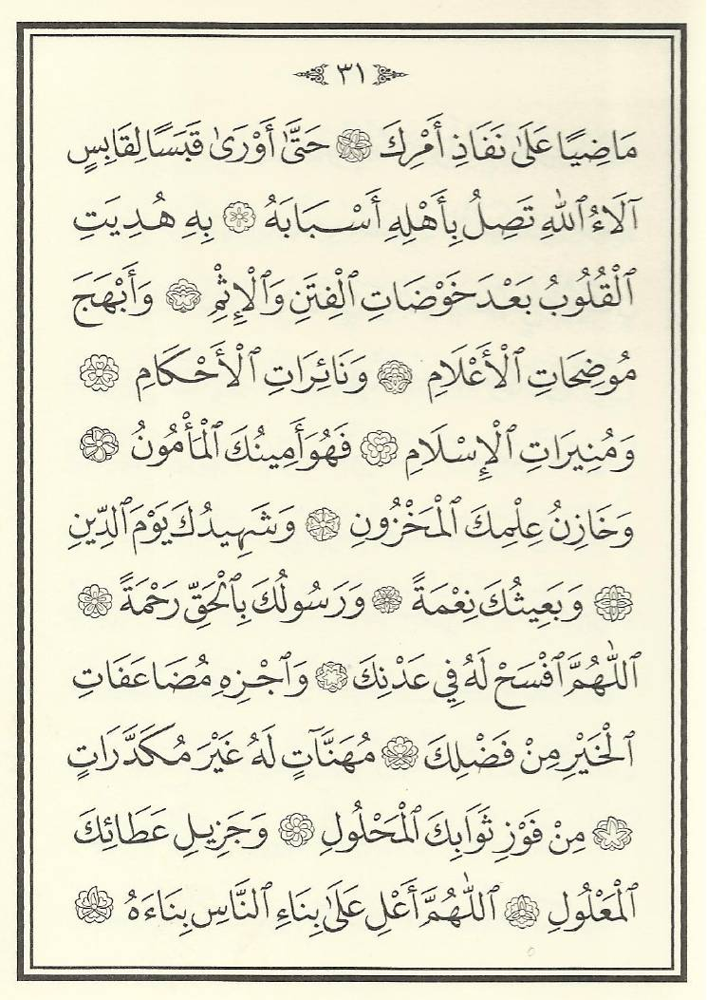
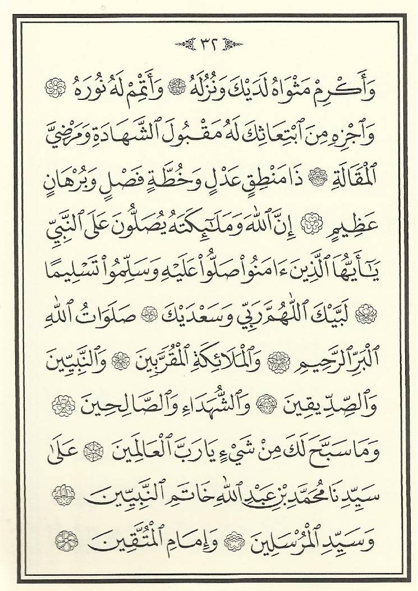

كيف تراجع: تحت كل صيغة «موافق / أغيّر / ملاحظة». وتحت كل صيغة زرّ «صفحة الكتاب» يعرض صورة الصفحة من طبعة الشيخ نوح كلر، حتى تطابق النص بنفسك حرفًا حرفًا. ما لم تختر فيه شيئًا يُعدّ مقبولًا.
ملاحظات عامة:
1) بلا «سيدنا» في هذه الصيغ الأولى: طبعة كلر تكتبها «اللهم صلِّ على محمد…» كألفاظ الأحاديث، وكثير من النسخ المتداولة تزيد «سيدنا». نقلتُها كما في الطبعة.
2) الصيغ الأولى (D002–D012) من «فصل في كيفية الصلاة على النبي ﷺ»، وأكثرها ألفاظ أحاديث؛ ذكرتُ أصل ما تحقّقتُ منه في sunnah.com.
3) في الدفعة سؤالان لك: زيادة «الترحّم» (D008 وD011)، والصيغة الطويلة صعبة اللغة المنسوبة إلى علي رضي الله عنه (D013–D016).
4) الضبط نقلته من صور الصفحات بنفسي؛ صورة الصفحة تحت كل صيغة للمطابقة. وفي التطبيق نستعمل النص وحده لا صور الطبعة.
D001 · الليلة 1
صيغة الليلة من «دلائل الخيرات»
صَلَّى اللهُ عَلَى سَيِّدِنَا وَمَوْلَانَا مُحَمَّدٍ وَعَلَى آلِهِ وَصَحْبِهِ وَسَلَّمَ.
طبعة كلر، ص 27
فاتحة «فصل في كيفية الصلاة على النبي ﷺ» قبل الصيغ. قصيرة، أقترحها لليلة الأولى.
صفحة الكتاب

D002 · الليلة 2
صيغة الليلة من «دلائل الخيرات»
اللَّهُمَّ صَلِّ عَلَى مُحَمَّدٍ وَأَزْوَاجِهِ وَذُرِّيَّتِهِ، كَمَا صَلَّيْتَ عَلَى إِبْرَاهِيمَ، وَبَارِكْ عَلَى مُحَمَّدٍ وَأَزْوَاجِهِ وَذُرِّيَّتِهِ، كَمَا بَارَكْتَ عَلَى آلِ إِبْرَاهِيمَ، إِنَّكَ حَمِيدٌ مَجِيدٌ.
طبعة كلر، ص 27
أصلها: البخاري (3369)
أصلها في البخاري من حديث أبي حُميد الساعدي، وفيه «كما صليت على آلِ إبراهيم»، وفي الدلائل «على إبراهيم».
صفحة الكتاب
D003 · الليلة 3
صيغة الليلة من «دلائل الخيرات»
اللَّهُمَّ صَلِّ عَلَى مُحَمَّدٍ وَعَلَى آلِهِ، كَمَا صَلَّيْتَ عَلَى إِبْرَاهِيمَ، وَبَارِكْ عَلَى مُحَمَّدٍ وَعَلَى آلِ مُحَمَّدٍ، كَمَا بَارَكْتَ عَلَى آلِ إِبْرَاهِيمَ فِي الْعَالَمِينَ، إِنَّكَ حَمِيدٌ مَجِيدٌ.
طبعة كلر، ص 27–28
أصلها: مسلم (405)
أصلها في مسلم من حديث أبي مسعود الأنصاري، بزيادة «في العالمين».
صفحة الكتاب

D004 · الليلة 4
صيغة الليلة من «دلائل الخيرات»
اللَّهُمَّ صَلِّ عَلَى مُحَمَّدٍ وَآلِ مُحَمَّدٍ، كَمَا صَلَّيْتَ عَلَى إِبْرَاهِيمَ، وَبَارِكْ عَلَى مُحَمَّدٍ وَآلِ مُحَمَّدٍ، كَمَا بَارَكْتَ عَلَى إِبْرَاهِيمَ، إِنَّكَ حَمِيدٌ مَجِيدٌ.
طبعة كلر، ص 28
صفحة الكتاب
D005 · الليلة 5
صيغة الليلة من «دلائل الخيرات»
اللَّهُمَّ صَلِّ عَلَى مُحَمَّدٍ النَّبِيِّ الْأُمِّيِّ، وَعَلَى آلِ مُحَمَّدٍ.
طبعة كلر، ص 28
أصلها: أبو داود (981)، حسّنه الألباني
قصيرة جدًّا.
صفحة الكتاب
D006 · الليلة 6
صيغة الليلة من «دلائل الخيرات»
اللَّهُمَّ صَلِّ عَلَى مُحَمَّدٍ عَبْدِكَ وَرَسُولِكَ.
طبعة كلر، ص 28
أصلها: البخاري (6358)
قصيرة جدًّا؛ وهي أول حديث أبي سعيد في البخاري.
صفحة الكتاب
D007 · الليلة 7
صيغة الليلة من «دلائل الخيرات»
اللَّهُمَّ صَلِّ عَلَى مُحَمَّدٍ وَعَلَى آلِ مُحَمَّدٍ، كَمَا صَلَّيْتَ عَلَى إِبْرَاهِيمَ وَعَلَى آلِ إِبْرَاهِيمَ، إِنَّكَ حَمِيدٌ مَجِيدٌ. اللَّهُمَّ بَارِكْ عَلَى مُحَمَّدٍ وَعَلَى آلِ مُحَمَّدٍ، كَمَا بَارَكْتَ عَلَى إِبْرَاهِيمَ وَعَلَى آلِ إِبْرَاهِيمَ، إِنَّكَ حَمِيدٌ مَجِيدٌ.
طبعة كلر، ص 28–29
أصلها: البخاري (3370)
هي الصلاة الإبراهيمية المشهورة، بلفظ حديث كعب بن عُجرة في البخاري حرفًا بحرف.
صفحة الكتاب

D008 · الليلة 8
صيغة الليلة من «دلائل الخيرات»
اللَّهُمَّ وَتَرَحَّمْ عَلَى مُحَمَّدٍ وَعَلَى آلِ مُحَمَّدٍ، كَمَا تَرَحَّمْتَ عَلَى إِبْرَاهِيمَ وَعَلَى آلِ إِبْرَاهِيمَ، إِنَّكَ حَمِيدٌ مَجِيدٌ.
طبعة كلر، ص 29
تنبيه: زيادة «الترحّم» في الصلاة عليه ﷺ فيها خلاف معروف بين العلماء، وليست في روايات الصحيحين. لم أقرأ كلام الشرّاح فيها بعد؛ إن أردتَ إبقاءها أنقل لك كلامهم قبل النشر.
صفحة الكتاب
D009 · الليلة 9
صيغة الليلة من «دلائل الخيرات»
اللَّهُمَّ وَتَحَنَّنْ عَلَى مُحَمَّدٍ وَعَلَى آلِ مُحَمَّدٍ، كَمَا تَحَنَّنْتَ عَلَى إِبْرَاهِيمَ وَعَلَى آلِ إِبْرَاهِيمَ، إِنَّكَ حَمِيدٌ مَجِيدٌ.
طبعة كلر، ص 29
مثل السابقة: ليست في روايات الصحيحين.
صفحة الكتاب
D010 · الليلة 10
صيغة الليلة من «دلائل الخيرات»
اللَّهُمَّ وَسَلِّمْ عَلَى مُحَمَّدٍ وَعَلَى آلِ مُحَمَّدٍ، كَمَا سَلَّمْتَ عَلَى إِبْرَاهِيمَ وَعَلَى آلِ إِبْرَاهِيمَ، إِنَّكَ حَمِيدٌ مَجِيدٌ.
طبعة كلر، ص 29
في هامش الطبعة: «في نسخة: صلِّ وسلِّم».
صفحة الكتاب
D011 · الليلة 11
صيغة الليلة من «دلائل الخيرات»
اللَّهُمَّ صَلِّ عَلَى مُحَمَّدٍ وَعَلَى آلِ مُحَمَّدٍ، وَارْحَمْ مُحَمَّدًا وَآلَ مُحَمَّدٍ، وَبَارِكْ عَلَى مُحَمَّدٍ وَعَلَى آلِ مُحَمَّدٍ، كَمَا صَلَّيْتَ وَرَحِمْتَ وَبَارَكْتَ عَلَى إِبْرَاهِيمَ وَعَلَى آلِ إِبْرَاهِيمَ فِي الْعَالَمِينَ، إِنَّكَ حَمِيدٌ مَجِيدٌ.
طبعة كلر، ص 29
فيها «وارحم» أيضًا؛ التنبيه نفسه في D008.
صفحة الكتاب
D012 · الليلة 12
صيغة الليلة من «دلائل الخيرات»
اللَّهُمَّ صَلِّ عَلَى مُحَمَّدٍ النَّبِيِّ وَأَزْوَاجِهِ أُمَّهَاتِ الْمُؤْمِنِينَ، وَذُرِّيَّتِهِ وَأَهْلِ بَيْتِهِ، كَمَا صَلَّيْتَ عَلَى إِبْرَاهِيمَ، إِنَّكَ حَمِيدٌ مَجِيدٌ. اللَّهُمَّ بَارِكْ عَلَى مُحَمَّدٍ وَعَلَى آلِ مُحَمَّدٍ، كَمَا بَارَكْتَ عَلَى إِبْرَاهِيمَ، إِنَّكَ حَمِيدٌ مَجِيدٌ.
طبعة كلر، ص 29–30
أصلها: أبو داود (982)، ضعّفه الألباني
شطرها الأول في أبي داود من حديث أبي هريرة.
صفحة الكتاب

D013 · الليلة 13
صيغة الليلة من «دلائل الخيرات»
اللَّهُمَّ دَاحِيَ الْمَدْحُوَّاتِ، وَبَارِئَ الْمَسْمُوكَاتِ، وَجَبَّارَ الْقُلُوبِ عَلَى فِطْرَتِهَا شَقِيِّهَا وَسَعِيدِهَا، اجْعَلْ شَرَائِفَ صَلَوَاتِكَ، وَنَوَامِيَ بَرَكَاتِكَ، وَرَأْفَةَ تَحَنُّنِكَ، عَلَى مُحَمَّدٍ عَبْدِكَ وَرَسُولِكَ، الْفَاتِحِ لِمَا أُغْلِقَ، وَالْخَاتِمِ لِمَا سَبَقَ، وَالْمُعْلِنِ الْحَقَّ بِالْحَقِّ، وَالدَّامِغِ لِجَيْشَاتِ الْأَبَاطِيلِ،
طبعة كلر، ص 30
صيغة طويلة مقسومة على أربع ليالٍ (D013–D016)، وهذا جزؤها الأول (1 من 4). تُنسب إلى علي بن أبي طالب رضي الله عنه. لغتها صعبة («داحي المدحوّات»: باسط الأرضين، «بارئ المسموكات»: خالق السماوات)؛ وقاعدتك «لغة يفهمها عامة الناس». قرارك: نُبقيها حفاظًا على روح الكتاب (مع شرح الكلمات الغريبة تحت الصيغة)، أم نتجاوزها؟
صفحة الكتاب
D014 · الليلة 14
صيغة الليلة من «دلائل الخيرات»
كَمَا حُمِّلَ فَاضْطَلَعَ بِأَمْرِكَ بِطَاعَتِكَ، مُسْتَوْفِزًا فِي مَرْضَاتِكَ، وَاعِيًا لِوَحْيِكَ، حَافِظًا لِعَهْدِكَ، مَاضِيًا عَلَى نَفَاذِ أَمْرِكَ، حَتَّى أَوْرَى قَبَسًا لِقَابِسٍ، آلَاءُ اللهِ تَصِلُ بِأَهْلِهِ أَسْبَابَهُ، بِهِ هُدِيَتِ الْقُلُوبُ بَعْدَ خَوْضَاتِ الْفِتَنِ وَالْإِثْمِ، وَأَبْهَجَ مُوضِحَاتِ الْأَعْلَامِ، وَنَائِرَاتِ الْأَحْكَامِ، وَمُنِيرَاتِ الْإِسْلَامِ،
طبعة كلر، ص 30–31
الجزء 2 من 4 (يبدأ من وسط الجملة لأن الصيغة كلها جملة واحدة طويلة).
صفحة الكتاب

D015 · الليلة 15
صيغة الليلة من «دلائل الخيرات»
فَهُوَ أَمِينُكَ الْمَأْمُونُ، وَخَازِنُ عِلْمِكَ الْمَخْزُونِ، وَشَهِيدُكَ يَوْمَ الدِّينِ، وَبَعِيثُكَ نِعْمَةً، وَرَسُولُكَ بِالْحَقِّ رَحْمَةً. اللَّهُمَّ افْسَحْ لَهُ فِي عَدْنِكَ، وَاجْزِهِ مُضَاعَفَاتِ الْخَيْرِ مِنْ فَضْلِكَ، مُهَنَّآتٍ لَهُ غَيْرَ مُكَدَّرَاتٍ، مِنْ فَوْزِ ثَوَابِكَ الْمَحْلُولِ، وَجَزِيلِ عَطَائِكَ الْمَعْلُولِ.
طبعة كلر، ص 31
الجزء 3 من 4.
صفحة الكتاب
D016 · الليلة 16
صيغة الليلة من «دلائل الخيرات»
اللَّهُمَّ أَعْلِ عَلَى بِنَاءِ النَّاسِ بِنَاءَهُ، وَأَكْرِمْ مَثْوَاهُ لَدَيْكَ وَنُزُلَهُ، وَأَتْمِمْ لَهُ نُورَهُ، وَاجْزِهِ مِنَ ابْتِعَاثِكَ لَهُ مَقْبُولَ الشَّهَادَةِ وَمَرْضِيَّ الْمَقَالَةِ، ذَا مَنْطِقٍ عَدْلٍ، وَخُطَّةٍ فَصْلٍ، وَبُرْهَانٍ عَظِيمٍ.
طبعة كلر، ص 31–32
الجزء 4 من 4 (آخر الصيغة).
صفحة الكتاب
